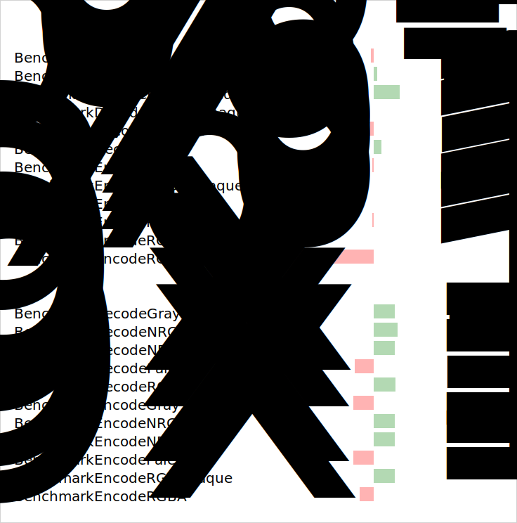

目录 [−]
本章介绍Go语言的代码的测试、性能测试以及示例的写法。
测试
虽然也有一些第三方的基于某种概念开发的测试库，但是我觉得最好用还是官方的测试库: testing。
常规地，我们会把测试代码的文件和正式的代码文件放在同一个文件夹下，但是包含测试代码的文件应该以"_test.go"结尾。
测试文件的包名可以和正式文件的包名相同，也可以不同。比如正式的报名为abc，测试的报名就可以是abc_test，但是不能是其它的，比如xyz。
这两种风格官方库中都有。一般来说和正式的包名相同的话，我们就可以进行白盒测试，可以直接调用包下的未导出的方法，包名不同则进行黑盒测试。根据 "The Go programming language"一书的介绍，这种方案还可以避免循环依赖的问题。
测试的文件名不能以下划线或者.开始，这些文件不会被go test包含进来。
测试的方法名有特殊的定义，以"Test"开头，并且参数为*testing.T：
|
|
Xxx可以是任意的alphanumeric字符串，但是首字母X不能是[a-z]中的字符，Testxyz就不是一个测试函数，但是Test123就是。
很多语言比如Java中的Junit、testng都提供了assertion辅助函数，可以方便的判定测试结果是否和期望的结果是否一致，但是Go官方并没有提供，而且是有意为之，说是避免让程序员犯懒。有地方库提供了相应的功能，比如testify/assert。
如果测试结果不是你所期望的，你可以调用Fail、Error等方法触发失败信号。
正常编译的时候测试文件会被排除在外，但是调用go test测试的时候会包含进来。
通过Skip方法可以掉过测试：
|
|
完整的测试命令如下：go test [build/test flags] [packages] [build/test flags & test binary flags]
不带任何参数的时候，它会编译和测试包下的所有的源文件。
除了build flag，test还会额外的处理几个编译flag: -args、-c、-exec xprog、-i、-o file。
packages可以是绝对路径、相对路径(.或..)或者只是一个包名(go会在GOPATH环境变量的列表中查找DIR/src/P，假设DIR在环境变量定义的文件列表中， P为包名)。...可以模糊匹配字符串，比如x/...匹配x及x的子文件夹。 go help packages会给出详细的介绍。
build flag包含很多的flag,一般我们都不会加这些flag,如果你想了解，可以看官方文档。
官方文档的Description of testing flags描述了全部的测试flag,我们挑几个常用的看一下。
-bench regexp:性能测试，支持表达式对测试函数进行筛选。-bench .则是对所有的benchmark函数测试-benchmem:性能测试的时候显示测试函数的内存分配的统计信息－count n:运行测试和性能多少此，默认一次-run regexp:只运行特定的测试函数， 比如-run ABC只测试函数名中包含ABC的测试函数-timeout t:测试时间如果超过t, panic,默认10分钟-v:显示测试的详细信息，也会把Log、Logf方法的日志显示出来
go test -v -args -x -v会编译然后执行程序：pkg.test -test.v -x -v，这样你就容易理解args参数的意义了。
Go 1.7中开始支持 sub-test的概念。
参考
- https://golang.org/pkg/testing/
- https://golang.org/doc/code.html#Testing
- https://golang.org/cmd/go/#hdr-Test_packages
- https://github.com/shageman/gotestit
测试比较工具
性能测试至关重要，你经常会问"A 更快还是 B更快"，当然还的靠性能数据说话。当然性能测试并不是一件简单的事情，今早我还看到陈皓写的一篇批判Dubbo测试的一篇文章：性能测试应该怎么做？。还好Go提供了一种容易的写性能测试的方法，但是如何比较多个候选者之间的性能呢？
一种方式就是编写多个测试函数，每个测试函数只测试一种候选方案，然后看测试的结果,比如我为Go序列化框架写的性能测试：gosercomp。
本节要介绍的第一个工具就是 benchcmp,它可以比较两个版本之间的性能的提升或者下降。比如你的代码库在Go 1.6.2和Go 1.7编译后的性能的改变：
|
|
然后用这个工具进行比较：
|
|
第二个工具是prettybench,它可以将Go自己的性能的测试报告美化，更好读：
PASS benchmark iter time/iter --------- ---- --------- BenchmarkCSSEscaper 1000000 2843 ns/op BenchmarkCSSEscaperNoSpecials 5000000 671 ns/op BenchmarkDecodeCSS 1000000 1183 ns/op BenchmarkDecodeCSSNoSpecials 50000000 32 ns/op BenchmarkCSSValueFilter 5000000 501 ns/op BenchmarkCSSValueFilterOk 5000000 707 ns/op BenchmarkEscapedExecute 500000 6191 ns/op BenchmarkHTMLNospaceEscaper 1000000 2523 ns/op BenchmarkHTMLNospaceEscaperNoSpecials 5000000 596 ns/op BenchmarkStripTags 1000000 2351 ns/op BenchmarkStripTagsNoSpecials 10000000 260 ns/op BenchmarkJSValEscaperWithNum 1000000 1123 ns/op BenchmarkJSValEscaperWithStr 500000 4882 ns/op BenchmarkJSValEscaperWithStrNoSpecials 1000000 1461 ns/op BenchmarkJSValEscaperWithObj 500000 5052 ns/op BenchmarkJSValEscaperWithObjNoSpecials 1000000 1897 ns/op BenchmarkJSStrEscaperNoSpecials 5000000 608 ns/op BenchmarkJSStrEscaper 1000000 2633 ns/op BenchmarkJSRegexpEscaperNoSpecials 5000000 661 ns/op BenchmarkJSRegexpEscaper 1000000 2510 ns/op BenchmarkURLEscaper 500000 4424 ns/op BenchmarkURLEscaperNoSpecials 5000000 422 ns/op BenchmarkURLNormalizer 500000 3068 ns/op BenchmarkURLNormalizerNoSpecials 5000000 431 ns/op ok html/template 62.874s
第三个要介绍的工具是benchviz,它使用benchcmp的结果，但是可以图形化显示性能的提升:

benchstat这个工具可以将多次测试的结果汇总，生成概要信息。
参考：
TDT (Table Driven Tests)
TDT也叫表格驱动方法，有时也被归为关键字驱动测试(keyword-driven testing，是针对自动化测试的软件测试方法，它将创建测试程序的步骤分为规划及实现二个阶段。
Go官方库中有些测试就使用了这种测试方法。
TDT中每个表格项就是一个完整的test case,包含输入和期望的输出，有时候还会加一些额外的信息比如测试名称。如果你发现你的测试中经常copy/paste操作，你就可以考虑把它们改造成TDT。
测试代码就一块，但是可以测试表格中的每一项。
下面是一个例子：
|
|
参考
- https://github.com/golang/go/wiki/TableDrivenTests
- http://dave.cheney.net/2013/06/09/writing-table-driven-tests-in-go
测试覆盖率
从 Go 1.2开始， Go就提供了一个生成代码覆盖率的工具cover。
代码覆盖率描述了包中代码有多少语句被测试所覆盖。
比如代码：
|
|
测试代码：
|
|
查看代码覆盖率：
|
|
想查看详细的覆盖率，可以生成coverage profile文件：
|
|
生成html测试报告：
|
|
一些网站可以帮助你测试生成代码覆盖率，你还可以把你的项目的badge写在README文件中， 比如gocover、coveralls
参考
性能测试
性能测试的写法和单元测试的写法类似，但是用"Benchmark"代替"Test"作为函数的开头，而且函数的参数改为*testing.B:
|
|
测试的时候，加上 -bench就可以执行性能的测试，如go test -bench .。
一个简单的性能测试代码如下：
|
|
测试代码会执行b.N次，但是N会根据你的代码的性能进行调整，代码执行的快，N会大一些，代码慢，N就小一些。
测试结果如下，执行了10000000次测试，每次测试花费282纳秒：
|
|
如果测试之前你需要准备一些花费时间较长的工作，你可以调用ResetTimer指定测试开始的时机：
|
|
如果需要并行地执行测试，可以在测试的时候加上-cpu参数，可以执行RunParallel辅助方法：
|
|
Example
一个代码示例函数就像一个测试函数一样，但是它并不使用*testing.T作为参数报告错误或失败，而是将输出结果输出到 os.Stdout 和 os.Stderr。
输出结果会和函数内的Output:注释中的结果比较， 这个注释在函数体的最底部。如果没有`Output:注释，或者它的后面没有文本，则代码只会编译，不会执行。
Godoc 可以显示 ExampleXXX 的实现代码， 用来演示函数XXX或者常量XXX或者变量XXX的使用。如果receiver为T或者*T的方法M,它的示例代码的命名方式应该是ExampleT_M。如果一个函数、常量或者变量有多可以在示例代码的方法名后加后缀_xxx, xxx的第一个字符不能大写。
举个例子:
|
|
相信你已经在godoc中看到了很多这样的例子，你也应该为你的库提供相应的例子，这样别人很容易熟悉你的代码。
你可以使用go help testfunc查看详细说明。
示例代码的文件名一般用example_test.go, 因为它们也是测试函数，所以文件名要以"_test.go"结尾。
运行测试代码：go test -v可以看到示例函数也被测试了。
如果我们将上例注释中的// 3改为// 2,运行go test -v可以看到出错，因为执行结果和我们的输出不一致。
|
|
有时候，我们可能要为一组函数写一个示例，这个时候我们就需要一个whole file example,一个whole file example以"_test.go"结尾，只包含一个示例函数，没有测试函数或者性能测试函数，至少包含一个其它包级别的声明,如下例就是一个完整的文件：
|
|
参考